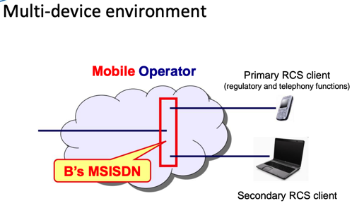
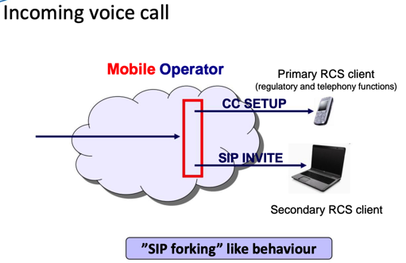
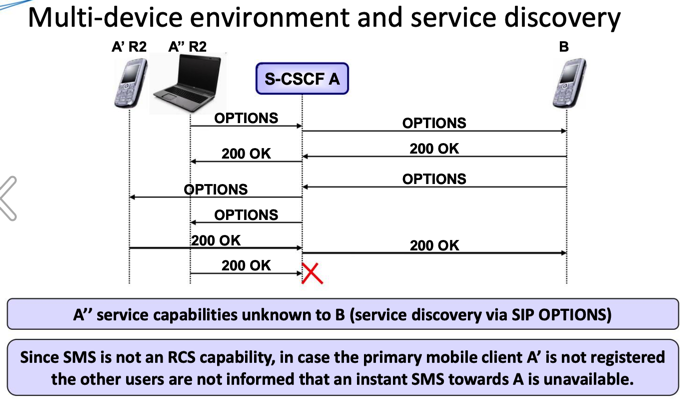
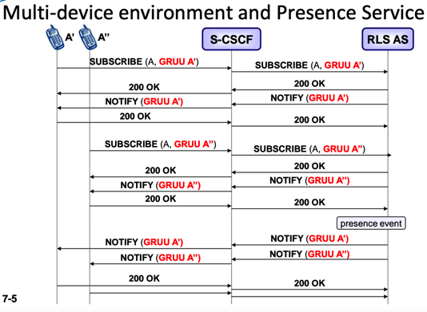
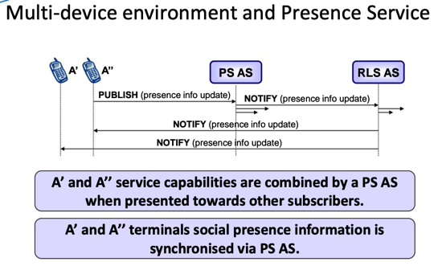
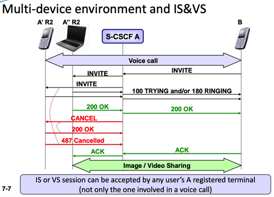
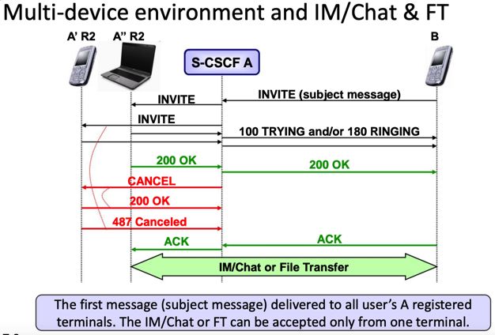

RCS开发基础知识
进行RCS开发之前，需要搞清楚很多基础知识，包括但不限于：
- RCS的基本功能
- 相关各种组织、协议规范
- 有哪些协议规范
- 分别是哪个组织制定的
- 大概作用是什么
- 各个组织之间的关系如何
- 有哪些协议规范
- RCS的各个版本
- 有哪些版本
- 分别对应着哪些缩写、简写
- RCS的核心架构
- 以及所依赖的
IMS的架构
- 以及所依赖的
RCS的功能组成
从功能角度来说：
- 基于IMS
- 利用了IMS的控制功能，实现了丰富的多媒体服务产品组合
- 多媒体消息multimedia messaging
- 聊天chat
- 单聊
- 群聊=组聊
- 文件发送file transfer
- 隐私privacy
- 好友列表buddy lists
- 状态 presence
- 能力发现capability discovery
- 使得用户得以知道其好友支持哪些功能
- 利于选择合适的通信方式与其沟通
- 避免了各种错误和尝试，提升了用户体验
- 实现了
- 互操作性interoperability
- 可触达性reachability
- 不同用户之间的无缝通信
- 使得用户得以知道其好友支持哪些功能
- 利用了IMS的控制功能，实现了丰富的多媒体服务产品组合
可以总结为：
RCS=IMS+其他- 其他：
- 认证 authentication
- 授权 authorization
- 注册 registration
- 收费 charging
- 路由 routing
- 其他：
RCS涉及多方
- 为了实现RCS，涉及到
- 多方
- 运营商=网络运营商=移动网络运营商=MNO
- 服务提供商=SP
- 网络相关
- 寻址addressing
- 信号处理signalling
- 包括
- 运营商网络
- 内部=intra：intra-operator
- 之间=inter：inter-operator
- 运营商网络
- 包括
- 多方
运营商部署RCS
- 部署
- 不同运营商部署RCS的方案不同
- 举例
- 在VoLTE之前就部署RCS消息服务
- 用于满足用户对于多媒体消息的需求
- 面对智能手机时期的OTT的各种应用的竞争
- 用于满足用户对于多媒体消息的需求
- 在VoLTE之前就部署RCS消息服务
- 举例
- 不同运营商部署RCS的方案不同
RCS多设备支持
- RCS 多设备环境
- 多设备环境
- 
- 接入语音电话
- 
- 多设备环境和服务发现
- 
- 多设备环境和存在服务
- 
- 
- 多设备环境和IS&VS
- 
- 多设备环境和 即时通讯/聊天/文件传输
- 
- 多设备环境
常见问题
手机没SIM卡能支持RCS吗？
- 答：可以
- 详见：
- https://www.gsma.com/futurenetworks/wp-content/uploads/2015/03/RCS5.3_UNI.zip
- -》 RCC.07 v6.0.pdf
- For the configuration of additional RCS capable devices (i.e. devices not carrying the SIM associated with a subscriber’s main identity)
- 意思应该就是：没有SIM卡的手机，理论上也可以支持RCS的
- For the configuration of additional RCS capable devices (i.e. devices not carrying the SIM associated with a subscriber’s main identity)
- -》 RCC.07 v6.0.pdf
- https://www.gsma.com/futurenetworks/wp-content/uploads/2015/03/RCS5.3_UNI.zip
- 详见：